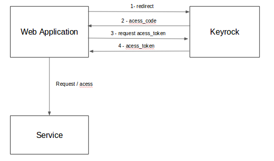

Aplicação 3
¶
A aplicação 3 suporta projetos que possuem a seguinte aplicação:

Aplicação Fiware - Documentação
Navegação
Aplicação 1
Aplicação 2
Aplicação 3
Aplicação 4
Aplicação 5
Guia de Instalação
Guia de Configuração
Guia de Execução
Related Topics
Documentation overview
Previous:
Aplicação 2
Next:
Aplicação 4
Busca rápida